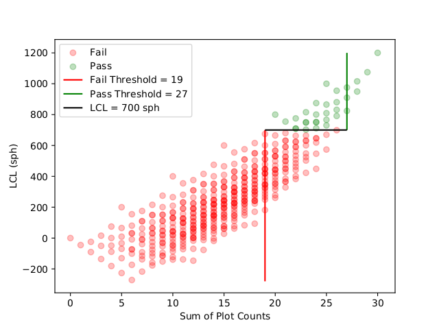

This post is based on a memorandum I wrote on 2019-06-12.
Purpose
After doing enough silviculture plots, intuitions about whether the block will pass the lower confidence limit (LCL) of stems per hectare (SPH) are developed. This post covers some computational results that back up these intuitions, and may serve as a useful shorthand for predicting if a block will have sufficient SPH for meeting stocking standards.
Introduction and Findings
One of these intuitions is that if the free-growing (FG), or well-spaced (WS), counts are sufficiently high for a given number of plots, then the statistics will almost certaintly pass. Similarly, low counts at a given sample size suggest that the statistics will almost certainly fail. The pass-or-failure status is dependent on the LCL.
\[\text{LCL} = \bar{x} - t_{\alpha, \text{df}} \frac{s}{\sqrt{n}}\]
Where \(\bar{x}\) is the average number of stems per hectare (or plot, if scaling factor is not applied), \(t_{\alpha, \text{df}}\) is the critical score at a given confidence level (\(1 -\alpha\)) and degrees of freedom (df). In this context, \(\alpha=0.1\) with \(\alpha_{\frac{1}{2}} = 0.05\) for the two-tailed procedure. The variable \(s\) is the sample standard deviation, defined as \(s = \pm \sqrt{\frac{\sum_i^n (x_i - \bar{x})^2}{n-1}}\), and \(n\) is the sample size. The factor \(\frac{s}{\sqrt{n}}\) is the standard error of the mean. Each count \(C_i\) is substituted as \(x_i = \min(C_i, \text{M-value})\) for these calculations, thus truncating the upper bound of the interval.
The LCL is a function of the mean number of stems per hectare, and the mean number of stems per area is a function of the total count of FG/WS stems in the sample. While LCL is not solely a function of the total count of FG/WS stems, the following figure shows the relationships among LCL, the sum of FG/WS plot counts, and the sample size.

Scatterplot showing the relationship between the sum of free growing plot counts and the resulting lower confidence limit used to determine sufficient stocking for Free-to-Grow status of a surveyed block. The relationship is plotted at 5 different sample sizes to illustrate the effect that sample size has on the relationship between the sum of free growing plot counts and the resulting lower confidence limit. Each point represents a possible combination of FG/WS stem counts for a sampled block.
While it is clear that neither the sum of the FG/WS plot counts nor the sample size will uniquely determine whether the LCL will meet stocking standards, the relationship suggests that there will be a lowest sum of FG/WS plot counts at a given sample size that guarantees the LCL will meet stocking standards. Similarly, there will be a highest sum of FG/WS plot counts at a given sample size that guarantees the LCL will not meet stocking standards. These thresholds trisect the possible plots into two regions of guaranteed results and one where the LCL may or may not meet stocking requirements.

Scatterplot of LCL against sum of plot counts for all possible plot counts of sample size \(n=5\). The points are colour-coded by pass/fail (green/red), and the lines indicate the fail threshold (red), pass threshold (green) and the LCL=700 line.
To determine these thresholds, all possible combinations of tree counts at each sample size from 5 through 40 were simulated and evaluated in terms of which FG/WS plot count summations give guaranteed results. A minimum sample size of 5 was used in compliance with the silviculture surveying manual, and a maximum sample size of 40 was used due to limitations on computing time. For a given sample size, the number of possible combinations of plot counts is given by
\[C(k, r) = \frac{(k + r -1)!}{r!(k-1)!},\]
with
\[k = |\{0,1,2,3,4,5,6\}| = 7\]
possible counts for a single plot. Therefore to evaluate each combination of plots for each sample size
\[n \in [5, 40] \land n \in \mathbb{N}\]
is given by
\[\sum_{i=5}^{r=40} \frac{(i + 6)!}{i!6!}\]
and evaulates to 62891169 unique possibilities. The resulting thresholds are given in the following table:
The inclusive thresholds of sum of plot counts guaranteed to either meet or fail to meet minimum stocking standards at a given sample size. This table assumes that the minimum stocking standard is 700 sph (assuming a plot multiplier of 200), or 3.5 stems per plot.
|Sample Size | Fail | Pass| |\(n\) | Threshold | Threshold | |5 | \(\leq\) 19 | 27 \(\leq\) | |6 | \(\leq\) 23 | 32 \(\leq\) | |7 | \(\leq\) 26 | 37 \(\leq\) | |8 | \(\leq\) 30 | 40 \(\leq\) | |9 | \(\leq\) 33 | 45 \(\leq\) | |10 | \(\leq\) 37 | 49 \(\leq\) | |11 | \(\leq\) 41 | 53 \(\leq\) | |12 | \(\leq\) 44 | 57 \(\leq\) | |13 | \(\leq\) 48 | 62 \(\leq\) | |14 | \(\leq\) 52 | 66 \(\leq\) | |15 | \(\leq\) 55 | 70 \(\leq\) | |16 | \(\leq\) 59 | 74 \(\leq\) | |17 | \(\leq\) 62 | 79 \(\leq\) | |18 | \(\leq\) 66 | 82 \(\leq\) | |19 | \(\leq\) 70 | 86 \(\leq\) | |20 | \(\leq\) 73 | 91 \(\leq\) | |21 | \(\leq\) 77 | 95 \(\leq\) | |22 | \(\leq\) 80 | 99 \(\leq\) | |23 | \(\leq\) 84 | 103 \(\leq\) | |24 | \(\leq\) 88 | 107 \(\leq\) | |25 | \(\leq\) 91 | 111 \(\leq\) | |26 | \(\leq\) 95 | 115 \(\leq\) | |27 | \(\leq\) 98 | 119 \(\leq\) | |28 | \(\leq\) 102 | 123 \(\leq\) | |29 | \(\leq\) 105 | 127 \(\leq\) | |30 | \(\leq\) 109 | 130 \(\leq\) | |31 | \(\leq\) 113 | 134 \(\leq\) | |32 | \(\leq\) 116 | 139 \(\leq\) | |33 | \(\leq\) 120 | 142 \(\leq\) | |34 | \(\leq\) 123 | 146 \(\leq\) | |35 | \(\leq\) 127 | 151 \(\leq\) | |36 | \(\leq\) 130 | 154 \(\leq\) | |37 | \(\leq\) 134 | 158 \(\leq\) | |38 | \(\leq\) 138 | 162 \(\leq\) | |39 | \(\leq\) 141 | 166 \(\leq\) | |40 | \(\leq\) 145 | 170 \(\leq\) |
Conclusion
The tabulated thresholds can be used for either well-spaced or free-growing statistics to determine whether the summation of plot counts alone will indicate pass/fail of stocking standards. If the summation of plot counts in a sample is strictly greater than the fail threshold but strictly less than the pass threshold, then the pass/fail status will also be dependent on the variance of the plots. For such samples where the pass/fail status is not uniquely identified by the sample size and summation of plot counts, completing the LCL calculation is required.
While SNAP!, Plant Wizard, and other programs are available for automatically calculating the well-spaced and free-growing statistics, there are times where manual calculations are performed. The following is a list of contributing factors that in some combinations may lead to the recommendation of this table being useful:
- Multiple surveyors concurrently in block
- No calculator capable of square roots available
- Critical \(t_{\alpha, \text{df}}\) score not available
- Training on using SNAP! statistics field compiler feature not complete
- Training on calculations among surveyors not complete
- Adding positive integers can be done mentally